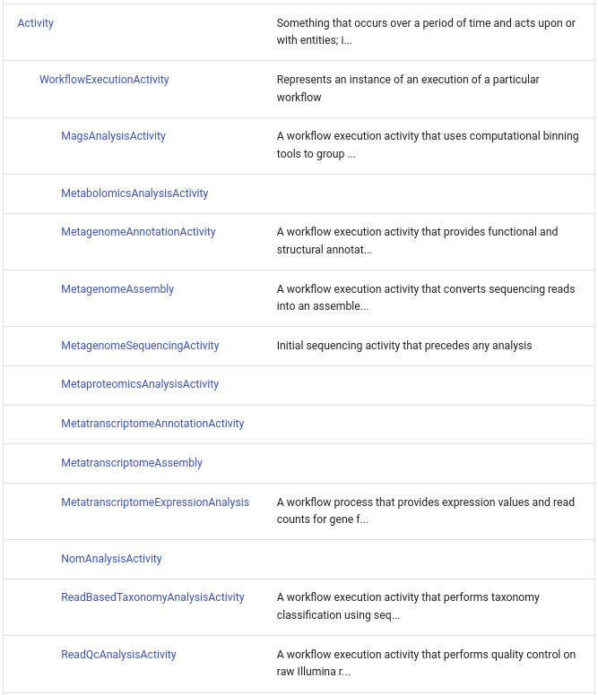
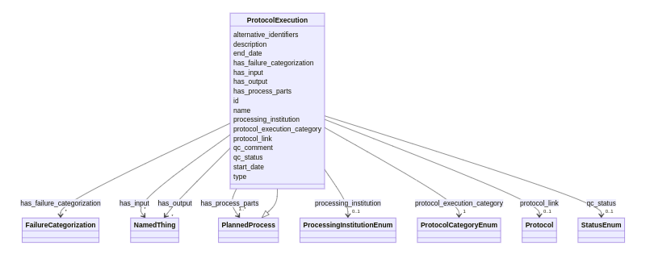
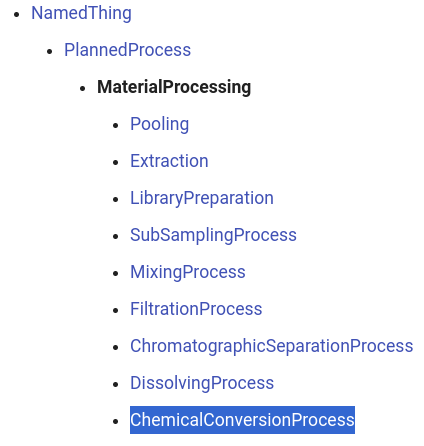
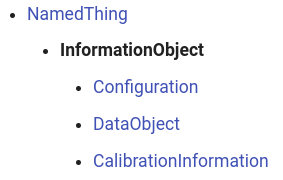
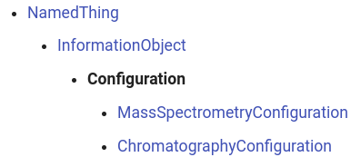
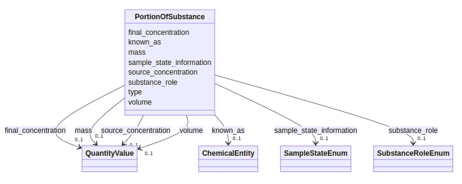
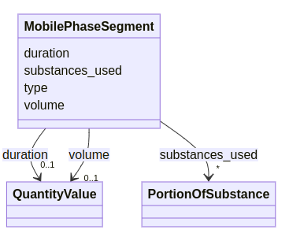
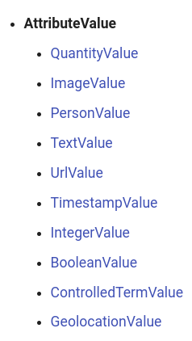
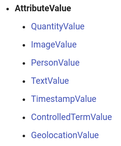

Merging the Berkeley schema into the NMDC Schema
This document is a retrospective on the changes made to the NMDC Schema between major versions 10 and 11.
Motivations for the Berkeley schema development included:
- First class representations of "omics" methods beyond nucleic acid analysis, like mass spectrometry-based
proteomics and metabolomics. Within the Berkeley schema development team, this effort has gone by names like
"replacing
OmicsProcessingwithDataGeneration". - Renaming and refactoring of the processes that model the processing of data, i.e. bioinformatics workflows.
- A continuation of bipartite (material->process->material->process) modeling for the processing of samples, following the bipartite modeling used in the bioinformatics workflows (data->process->data).
- Continuation of using example data files as unit tests of the schema.
- Switching numerous string-range slots to enumeration-range slots.
- A requirement that all data records assert their own type and the addition of support for polymorphic aggregations of data.
- Establishing schema development and modeling best practices and sharing domain understanding between subteams.
See also: https://github.com/microbiomedata/nmdc-schema/releases/tag/v11.0.0
Conventions:
This monospaced code fontis used to indicate the verbatim names of elements from the schema and variables, functions, etc. in code.- Things that appear in the monospaced code font and use
UpperCamelCaseare schema classes unless otherwise noted. - Things that appear in the monospaced code font and use
lower_snake_caseare schema slots unless otherwise noted. - Other LinkML schema naming conventions are not discussed here.
- A dotted notation in the monospaced code font, with elements in UpperCamelCase, like
Vehicle.MotorVehicle.PassengerCarindicates a class hierarchy.PassengerCar is_a MotorVehicleandMotorVehicle is_a Vehicle.
Refactoring of Classes
This major refactoring increases the number of classes in the schema from 70 to 75, but decreases the number of root classes from 19 to 17 due to better organization.
You won't find any classes designated as root classes in the schema,
but they can be inferred by the absence of any is_a assertions on the class. Root classes do not inherit anything
from any superclass. A routine part of schema maintenance is looking for opportunities to group and generalize similar
root classes.
Table of classes removed, added or refactored in v10 to v11 migration
The Selected legacy parents column is provided to highlight two groups of updates that are discussed further below. Not every parent is shown for every legacy class.
| Removed legacy class | New/Replacement class from Berkeley schema | Selected legacy parents |
|---|---|---|
Activity |
||
AnalyticalSample |
||
BiosampleProcessing |
||
BooleanValue |
AttributeValue |
|
IntegerValue |
AttributeValue |
|
MagsAnalysisActivity |
MagsAnalysis |
WorkflowExecutionActivity |
MetaboliteQuantification |
MetaboliteIdentification |
|
MetabolomicsAnalysisActivity |
MetabolomicsAnalysis |
WorkflowExecutionActivity |
MetagenomeAnnotationActivity |
MetagenomeAnnotation |
WorkflowExecutionActivity |
MetagenomeSequencingActivity |
MetagenomeSequencing |
WorkflowExecutionActivity |
MetaproteomicsAnalysisActivity |
MetaproteomicsAnalysis |
WorkflowExecutionActivity |
MetatranscriptomeAnnotationActivity |
MetatranscriptomeAnnotation |
WorkflowExecutionActivity |
NomAnalysisActivity |
NomAnalysis |
WorkflowExecutionActivity |
OmicsProcessing |
DataGeneration |
|
Reaction |
||
ReactionParticipant |
||
ReadBasedTaxonomyAnalysisActivity |
ReadBasedTaxonomyAnalysis |
WorkflowExecutionActivity |
ReadQcAnalysisActivity |
ReadQcAnalysis |
WorkflowExecutionActivity |
Solution |
||
SolutionComponent |
||
UrlValue |
AttributeValue |
|
WorkflowExecutionActivity |
||
CalibrationInformation |
||
ChemicalConversionProcess |
||
ChromatographyConfiguration |
||
Configuration |
||
DissolvingProcess |
||
InformationObject |
||
Instrument |
||
MassSpectrometry |
||
MassSpectrometryConfiguration |
||
MaterialProcessing |
||
MobilePhaseSegment |
||
NucleotideSequencing |
||
PortionOfSubstance |
||
ProtocolExecution |
||
StorageProcess |
||
WorkflowExecution |
For example, the MetagenomeAnnotationActivity class used to be located in the hierarchy
Activity.WorkFlowExecutionActivity, but now it and 11 similar classes are located in the hierarchy
NamedThing.PlannedProcess.WorkflowExecution. The word Activity, inherited from the Provenance Ontology, has largely
been removed from the schema, as PlannedProcess from the Ontology of Biomedical Investigations now plays a more
important organizational role.
v10.9.1

ProtocolExecution has been added as a PlannedProcess for aggregating other processes together when they follow the
same Protocol.

Several other kinds of processual classes were also migrated into the NamedThing.PlannedProcess, with or without
renaming or other refactoring. For example, the fairly vague root class OmicsProcessing is now
NamedThing.PlannedProcess.DataGeneration, which now has the following subclasses:
MassSpectrometryNucleotideSequencing
The legacy BiosampleProcessing class (including Pooling, LibraryPreparation) and some classes that were previously
direct subclasses of PlannedProcess (Extraction, SubSamplingProcess, MixingProcess, FiltrationProcess,
ChromatographicSeparationProcess) have been re-rooted into a new MaterialProcessing class.
DissolvingProcess and ChemicalConversionProcess are new subclasses of MaterialProcessing.
v11.0.1

StorageProcess has been added as a new PlannedProcess but the schema does not classify it as a
MaterialProcessing because it does not intrinsically create new/modified samples.
Terms that implied quantification like MetaboliteQuantification have been renamed to reemphasize the more fundamental
activity of identifying, thus MetaboliteIdentification.
A CalibrationInformation class, a Configuration class and two Configuration subclasses (illustrated below) have
been added in support of chromatographic separations and mass spectrometry analyses. These are subclasses of the
new InformationObject, which has also become the parent of DataObject, which used to be a direct subclass
of NamedThing.
v11.0.1

v11.0.1

Solution-centric modelling for laboratory processes was also replaced with substance-centric modelling.
Removed:
SolutionSolutionComponent
Added:
PortionOfSubstanceMobilePhaseSegment
v11.0.1

v11.0.1

The Berkeley schema retains the AttributeValue hierarchy but eliminates classes like IntegerValue and UrlValue,
whose only advantages over values of integer or string types were never-used provenance slots.
v10.9.0

v11.0.1

Classes related to metabolic reactions that a cell could carry out, based on some functionality in its genome, have been removed, due to potential confusion with reactions that an experimenter might carry out in order to make a sample suitable for analysis.
Removed:
ReactionReactionParticipant
Added
ChemicalConversionProcess
A very general Instrument class was added as a subclass of MaterialEntity, but without any subclasses. Knowledge
about instruments is captured directly in NMDC's MongoDB database. The instances are normalized by populating their
vendor slot with a value from the InstrumentVendorEnum and by populating the model slot with a value from the
InstrumentModelEnum. Mappings between these NMDC vocabularies and vocabularies from collaborators like NCBI and GOLD
are saved in various repos like nmdc-schema and nmdc-runtime.
AnalyticalSample was removed from the MaterialEntity hierarchy, as NMDC does not wish to imply that certain samples
could be used for analyses or that others could not be used for analyses, or even that some samples are locked into an
analytical path, such that they could not be subject to any more MaterialProcessing.
Refactoring of Slots
The number of slots in the schema remains 872 after the Berkeley merger, although there are 44 slots that have been retired from the legacy schema and 44 that were added in the switch from v10 to v11.
Many of the slot changes can be understood by looking at the Python data migration code in nmdc_schema/migrators.
A major explanation for the slot differences is the adoption of a polymorphic (i.e., multi-shaped) model for slots
in the Database class, which corresponds to polymorphic collections in the v11-compliant MongoDB database. In the
legacy model, the range for each of the Database slots was intended to be one class, with no provision for class
hierarchy. In the new model, the range for each slot is still specified as a single class, but each Database slot can
now collect instances of that specified class, plus the instances of any subclass of the specified class.
Slots removed from Database
extraction_setlibrary_preparation_setmags_activity_setmetabolomics_analysis_activity_setmetagenome_annotation_activity_setmetagenome_assembly_setmetagenome_sequencing_activity_setmetaproteomics_analysis_activity_setmetatranscriptome_annotation_setmetatranscriptome_assembly_setmetatranscriptome_expression_analysis_setnom_analysis_activity_setomics_processing_setplanned_process_setpooling_setread_based_taxonomy_analysis_activity_setread_qc_analysis_activity_set
Slots added to Database
calibration_setchemical_entity_setchromatographic_categoryconfiguration_setdata_generation_setinstrument_setmaterial_processing_setprotocol_execution_setstorage_process_setworkflow_execution_set
So now, instances of MetaproteomicsAnalysis, MetatranscriptomeAnnotation and NomAnalysis are all collected (or
aggregated) in workflow_execution_set.
These polymorphic collection are enabled by a significant modeling change in v11 of the schema: a strict requirement
that, within any representation of schema-compliant data, that all instances of all classes declare their own type.
Furthermore, the values in the type slot must be the class_uri of the instantiated class. That, in turn, means that
all classes must now declare a class_uri and that the type slots must be associated with each class. This is
enforced with the following Python tests:
- test_all_classes_assert_a_class_uri.py
- test_all_classes_can_use_type_slot.py
Note that classes should not re-associate themselves with any slot that they inherit from a superclass. For example, the
class definition for Study inherits the id slot from NamedThing, so Study doesn't include id in its slots
list. This no-reasserting rule is tested with test_inherited_slots_not_reiterated.py.
Also note that the legacy v10 schema did include a type slot, but it was used very inconsistently. v10 also had a
similar designated_class slot which has been retired.
The following slots were removed as a consequence of removing the Reaction class and beginning the process of
deprecating the Pathway class:
chemicaldirectionhas_parthas_participantsis_balancedis_diastereoselectiveis_fully_characterizedis_stereois_transportleft_participantsright_participantssmarts_stringstoichiometry
compound and has_solution_components were removed as a consequence of removing the Solution class.
The string-typed instrument_name and used were removed due to refactoring around the new Instrument class and the
instrument_used slot, which is associated with numerous PlannedProcess subclasses.
The following changes have been made to slots in the Extraction class:
extractantwas replaced withsubstances_usedextraction_methodwas replaced withprotocol_linkextraction_targetwas replaced with amultivaluedslotextraction_targets
The string-typed relevant_protocols slot has been replaced with the protocol_link slot, which uses the Protocol
class as its range.
The string-typed has_raw_value has been replaced with analyte_category, which has an enumerated range. The following
are the permissible values for analyte_category:
metagenomemetatranscriptomemetaproteomemetabolomelipidomenom
In keeping with the focus on identification rather that quantification, has_metabolite_quantifications has been
replaced with has_metabolite_identifications and metabolite_quantified has been replaced with
metabolite_identified.
alternate_emails and keywords were removed due to lack of use.
The part_of slots have been replaced in many cases with more specific slots. For example, Biosample now has an
associated_studies relationship with Study.
The NMDC Schema has always imported many slots from the MIxS standard, and has generally associated them with the
Biosample class. In schema v11, several of those have been de-associated with Biosample as they are arguably
attributes of laboratory methods, not about samples of biological materials that are extracted from some environment.
chimera_checknucl_acid_ampnucl_acid_extpcr_condpcr_primerspool_dna_extractssamp_vol_we_dna_extseq_methseq_quality_checktarget_genetarget_subfragment
Some, but not all, of those slots were re-associated with Extraction, LibraryPreparation, or NucleotideSequencing.
has_process_parts has been added to capture the relationship between a ProtocolExecution and the Process instances
that were carried out with the intention of completing a specified protocol under specified circumstances.
The following slots have been added in support of the new CalibrationInformation and Configuration modelling for
MassSpectrometry. The new schema's increased use of boolean and enumerated ranges (as opposed to
open-ended string ranges) is nicely illustrated by these slots.
calibration_objectcalibration_standardcalibration_targetinternal_calibrationhas_chromatography_configurationhas_mass_spectrometry_configuration
The following slots have been added, specifically on MassSpectrometryConfiguration, so that a small number of
MassSpectrometryConfiguration instances can be reused to describe the following:
mass_analyzersmass_spectrometry_acquisition_strategymass_spectrum_collection_modesionization_sourcepolarity_moderesolution_categories
These new slots are examplars of the increased emphasis on enumeration ranges (and the avoidance of the word 'type' in
slot names other than type):
analyte_categorychemical_conversion_categorychromatographic_categoryapplicable toChromatographyConfigurationandChromatographicSeparationProcess?data_categoryeluent_introduction_categoryfeature_categoryprotocol_execution_category
The following new slots support the change from solution-based modeling to substance-based modelling:
substance_rolesubstances_usedsubstances_volumesource_concentrationfinal_concentrationsample_state_information
The ChemicalEntity class has been refactored for nmdc-schema v11, and is likely to undergo additional changes in later
2024 and 2025. For now, a known_as slot has been added to allow for flexibility in PortionOfSubstance and retain
precision in ChemicalEntity.
extraction_targets was added to Extraction. sampled_portion was added to SubSamplingProcess and
jgi_portal_analysis_project_identifiers.
Refactoring of Enumerations
The following enumerations were removed:
CompoundEnumDeviceEnum
processing_institution_enum was renamed to ProcessingInstitutionEnum.
And the following enumerations were added:
AnalyteCategoryEnumCalibrationStandardEnumCalibrationTargetEnumChemicalConversionCategoryEnumChromatographicCategoryEnumDataCategoryEnumEluentIntroductionCategoryEnumExecutionResourceEnumIonizationSourceEnumMassAnalyzerEnumMassSpectrometryAcquisitionStrategyEnumMassSpectrumCollectionModeEnumPolarityModeEnumProcessingInstitutionEnumProtocolCategoryEnumResolutionCategoryEnumSamplePortionEnumSampleStateEnumSubstanceRoleEnum
Refactoring of prefixes
Expansions for the following prefixes were added:
- NCBI needs better modeling for NCBI taxonomy identifiers
- SO
- jgi.analysis
- MISO
Refactoring of example data files
v10 of the schema provided 168 example data files. v11 has increased that to 224, providing better testing coverage of
the schema via the run-linkml-example phase of make test.
v11 is also more thorough in annotating abstract classes, with 11, compared to 7 in v10. That includes a new abstract
annotation for AttributeValue, MaterialProcessing (which essentially replaces BiosampleProcessing) and
DataGeneration (which essentially replaces OmicsProcessing).
Methods used to compare the two versions of the schema
Running the whole schema though a tool like deepdiff can be overwhelming, but extracting a single class from two
versions of the schema and then deep diffing them like this can be enlightening. Note that we are not curl-ing
or wget-ing the schemas from GitHub, but rather using LinkML SchemaView() to fetch the root schema file and then
merge in all of its imports.
The deepdiff results are then piped through yq with the -P option to convert to YAML. yq is distributed as a snap
package in some Linux distributions, and snap applications can't generally write to standard output, so we add the
otherwise redundant step of piping the output though cat in order to write to a file.
pre_schema.yaml:
poetry run python -c 'from linkml_runtime.utils.schemaview import SchemaView; \
from linkml_runtime.dumpers import yaml_dumper; \
schema_url = "https://raw.githubusercontent.com/microbiomedata/nmdc-schema/refs/tags/v10.9.1/src/schema/nmdc.yaml"; \
sv = SchemaView(schema_url, merge_imports=True); \
yaml_dumper.dump(sv.schema, "pre_schema.yaml")'
berkeley_schema.yaml:
poetry run python -c 'from linkml_runtime.utils.schemaview import SchemaView; \
from linkml_runtime.dumpers import yaml_dumper; \
schema_url = "https://raw.githubusercontent.com/microbiomedata/nmdc-schema/refs/tags/v11.0.1/src/schema/nmdc.yaml"; \
sv = SchemaView(schema_url, merge_imports=True); \
yaml_dumper.dump(sv.schema, "berkeley_schema.yaml")'
pre_study.yaml: pre_schema.yaml
yq '.classes.Study' $< | cat > $@
berkeley_study.yaml: berkeley_schema.yaml
yq '.classes.Study' $< | cat > $@
pre_vs_berkeley_study.yaml: pre_study.yaml berkeley_study.yaml
poetry run deep diff --ignore-order $^ | yq -P | cat > $@
dictionary_item_added:
- root['class_uri']
- root['slot_usage']['protocol_link']
values_changed:
root['from_schema']:
new_value: https://w3id.org/nmdc/basic_classes
old_value: https://w3id.org/nmdc/nmdc
iterable_item_added:
root['slots'][24]: protocol_link
iterable_item_removed:
root['slots'][3]: id
root['slots'][4]: alternative_identifiers
root['slots'][9]: description
root['slots'][26]: relevant_protocols
root['slots'][30]: type
This reveals that the class_uri and protocol_link slots were added as described above. The from_schema values
reveals the fact that v11 splits the elements of the schema into different YAML source files. The large number of files
was intended to make it easier to debug build errors, but it has been difficult to split the contents into files that
have a consistent domain or topic.
The diff also shows the removal of the id, alternative_identifiers, description, relevant_protocols and type
slots, which might be counter-intuitive, until one considers that all of those slots are inherited from Study's
parent, NamedThing and that schema v11 forbids re-asserting slots that are inherited from a superclass.
Challenges with the use of structured_patterns in slot_usages for approximating referential integrity, etc.
LinkML slot definitions must assert their range, typically as a type (like string or float), an enumeration, or a
class. If they don't, they inherit the schema's default_range, which is string in the nmdc-schema.
LinkML is able to validate that a slot, used in a data source (file or database collection), is populated with an entity
of the right type (i.e. is in range) in almost all cases. Unfortunately, one of the cases that currently can not be
validated is extremely important to NMDC: checking the data populated into a slot whose range is a non-inlined class.
This case can also be described as the slot mentioning an instance of a class by reference. For the record, this
requires that the mentioned class has an identifying slot of its own. An example of this is
the associated_studies slot in the Biosample
class, which has the Study class as its range. The definition of associated_studies does not assert inlined
or inlined_as_list to be true, and the Study class inherits
the id slot as an identifier
from NamedThing. Therefore, the value of
an associated_studies slot in a data file must be the id of a Study.
In the absense of any other data or constraints, the nmdc-schema will consider the following assertion valid for
a Biosample, even if xyz isn't defined in the same data source:
associated_studies:
- xyz
If xyz is defined in the data source and it does not pass validation as a Study, then the Biosample will also
be considered invalid. Unfortunately, the definitions and mentions of nmdc-schema instances are frequently split across
different MongoDB collections, so validating that a referred instance is really of the right type is non-trivial.
As a very lightweight guard against referring to instances of the wrong type, stuctured_patterns were added
to slot_usages in berkeley-schema-fy24, and also independently in nmdc-schema v10 during the development of
berkeley-schema-fy24/v11. In addition to being incomplete, this solution introduces some minor problems into the schema,
and it relies on some other advanced LinkML features. Still, it has been useful in debugging some schema/data problems
that slipped though the cracks in the past.
For example, the following can be found inside of Biosample's slot_usage block now:
associated_studies:
required: true
range: Study
structured_pattern:
syntax: "{id_nmdc_prefix}:sty-{id_shoulder}-{id_blade}$"
interpolated: true
That means that the value after associated_studies: in a Biosample must be the id of a Study instance, but also
must be a string matching some pattern. The pattern is only revealed if all of the syntax elements in curly brackets
are defined in the settings block of the schema, and if the schema has been fed though the gen-likml command line
too with --materialize-patterns enabled. In the nmdc_schema/nmdc_materialized_patterns.yaml schema, one can see the
intended pattern:
associated_studies:
name: associated_studies
range: Study
required: true
pattern: ^(nmdc):sty-([0-9][a-z]{0,6}[0-9])-([A-Za-z0-9]{1,})$
structured_pattern:
syntax: '{id_nmdc_prefix}:sty-{id_shoulder}-{id_blade}$'
interpolated: true
Therefore, when using nmdc_schema/nmdc_materialized_patterns.yaml for validation, a Biosample with
this assertion:
associated_studies:
- xyz
would fail validation,
because 'xyz' does not match '^(nmdc):sty-([0-9][a-z]{0,6}[0-9])-([A-Za-z0-9]{1,})$' (See https://regexr.com/87a0s).
NMDC's use of structured_pattern slot_usages is a manual effort to align the id pattern specified in a class's
definition with a constraint on how identifiers for instances of that class are mentioned in a slot.
Now that we have addressed structured_patterns including settings and gen-linkml, let's
address slot_usages, which are attributes of LinkML classes that are intended to refine the behavior of slots,
relative to their global definition within the schema. For example, here's the global definition of has_input:
has_input:
aliases:
- input
range: NamedThing
multivalued: true
description: >-
An input to a process.
The only constraint is that the value of has_input must be the id of a NamedThing, since has_input doesn't
assert inlined or inlined_as_list, and NamedThing used id as it's identifying slot. As previously mentioned,
structured_patterns can be used to improve the validation of this slot in some circumstances, but there are multiple
classes that use has_input, and they don't all use the same range for has_input. For
example, CollectingBiosamplesFromSite
specifies that it's range for has_input is Site. Note that not all nmdc-schema contributors are in favor of those
semantics.
has_input:
range: Site
description: >-
The site from which samples are collected.
That slot_usage does not assert a structured_pattern, but many of them do. There are also classes that
use has_input without any range constraint in their slot_usage, but might be clearer if they did. For example,
WorkflowExecution should probably specify that it
only uses DataObject in the range of its has_input. This
would provide useful clarity to diagramming tools
like refgraph.
Finally, we should point out that some slot_usage ranges in nmdc-schema use the LinkML any_of construct. For
example, here's part of the slot_usage
for MaterialProcessing:
has_input:
any_of:
- range: Biosample
- range: ProcessedSample
structured_pattern:
syntax: "{id_nmdc_prefix}:(bsm|procsm)-{id_shoulder}-{id_blade}$"
interpolated: true
That might be seen as asserting that MaterialProcessing's range is either Biosample or ProcessedSample,
but has_input has the global range of NamedThing, so the effective range for has_input in MaterialProcessing
is the union of NamedThing, Biosample and ProcessedSample.
Note that the slot_usage strucutred_pattern essentially asserts two different strucutured_pattern syntaxes, due
to the use of the | character: "{id_nmdc_prefix}:bsm-{id_shoulder}-{id_blade}$" for Biosamples and
"{id_nmdc_prefix}:procsm-{id_shoulder}-{id_blade}$" for ProcessedSamples.
Summary of challenges
- LinkML validation does not guarantee that references have been checked for presence and correct form within a distributed data ecosystem.
slot_usageis complex to understand and use.structured_patternrequires the definition ofsettingsand pattern materialization withgen-linkmlin order to be useful.- LinkML doesn't provide any automation for the alignment of
idpatterns in class definitions,slot_usagestructured_patterns, andslot_usageranges. - A human's refinement- or narrowing-based understanding of
any_ofranges may not match LinkML's union-based understanding. any_ofranges can easily override global slot definitions, when they are meant to refine them (in the spirit of monotonicity).slot_usagestructured_patterns, as used in the nmdc-schema, imply that the ranges of some slots are both a referred thing (asserted in therange), and a string (by way of the pattern). That can never be true, and it breaks the functionality of some derived artifacts, such as OWL and RDF.
The LinkML and NMDC teams are currently working on more sophisticated solutions for interpreting any_of ranges,
checking referential integrity and for making structured_pattern materialization the default in any situation that
used the schema.